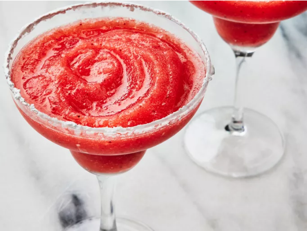

Frozen Strawberry Margarita

Description
What better way to kick off the summer than with a frozen strawberry margarita? This 5 minute, 5 ingredient cocktail can be whipped up whenever you're in need of a little of fun!
Yields 4 servings. Approximately 5 minutes in total prep time.
Ingredients
- 2 cups of ice
- 6 fluid ounces of tequila
- 2 fluid ounces of triple sec
- 8 ounces of frozen sliced strawberries
- 4 fluid ounces of frozen limeade concentrate
- 1/2 lime, juiced (optional)
- 2 tablespoons sugar (optional)
Directions
- Dip rim of margarita glasses into lime juice. Shake off excess and immediately dip into sugar (optional)
- Fill blender with ice and pulse until ice is crushed
- Add in your tequila, triple sec, strawberries, and limeade concentrate
- Blend until smooth (about 30 seconds) and pour into margarita glasses
Link to original recipe for more pictures, reviews, and nutrition facts